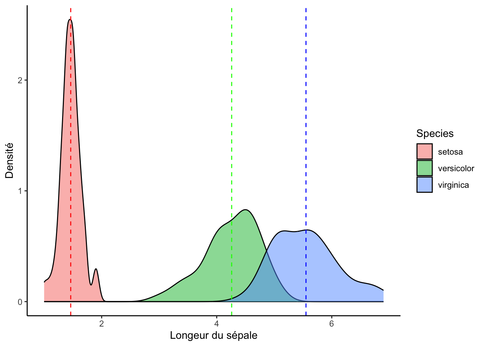
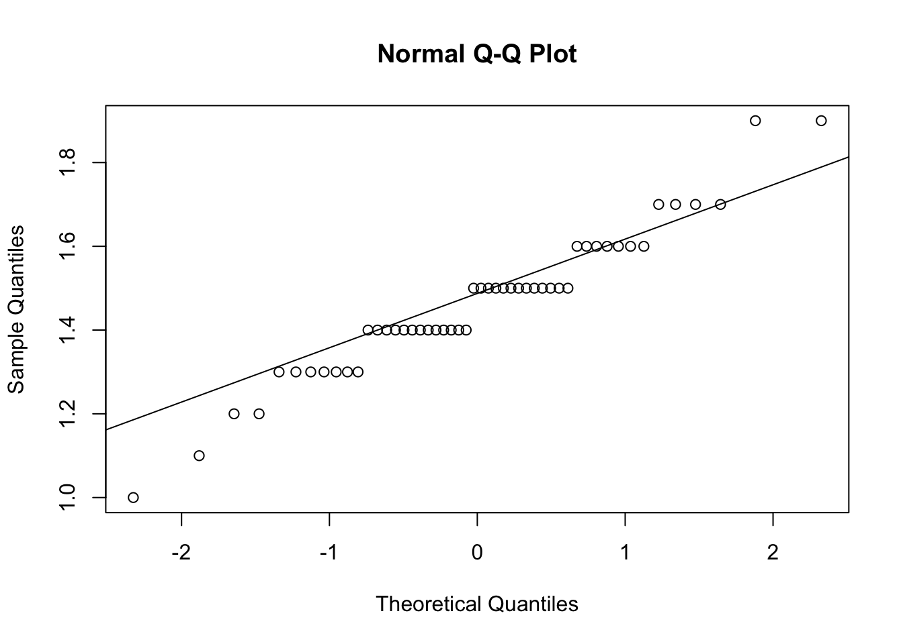
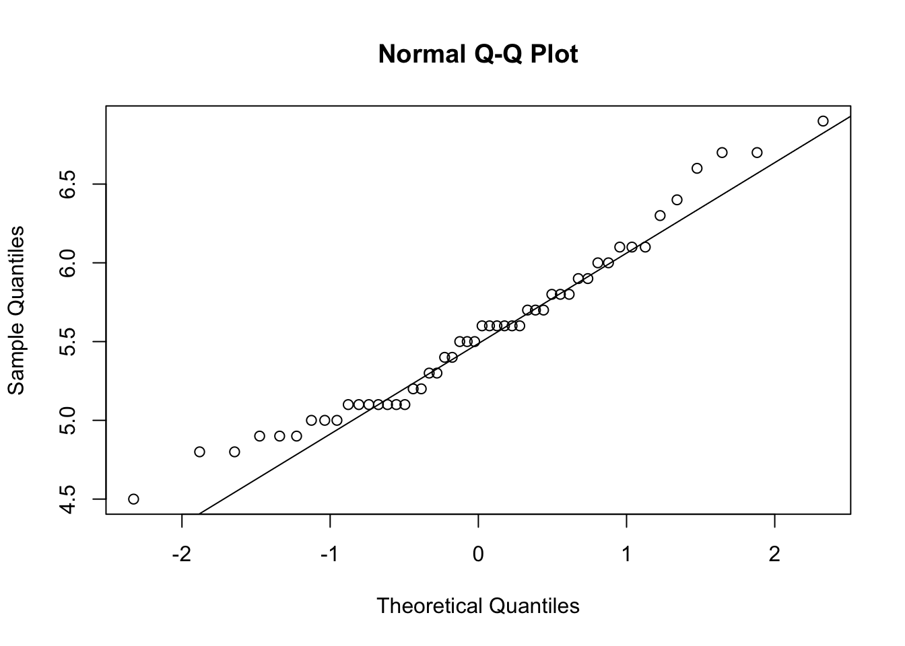
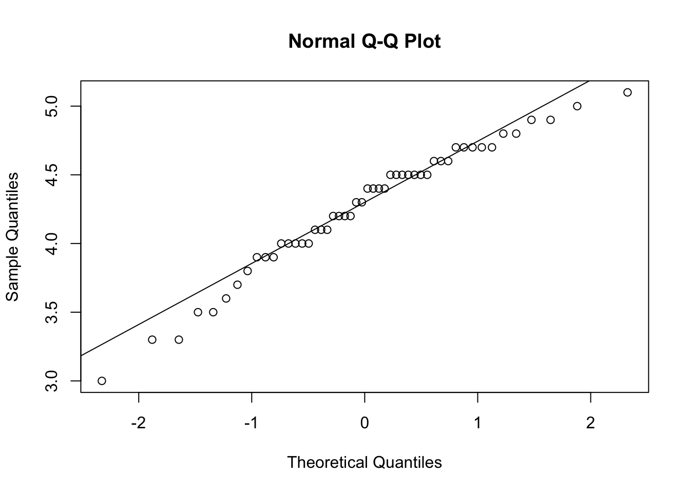

Important : Ce guide assume que vous savez comment :
Vous pouvez cliquer sur les liens ci-dessus pour consulter les guides associées.
Dans ce guide, nous étudierons des fleurs. La banque de données que
nous utiliserons (iris) est inclue par défaut dans R. Pour
suivre, vous n’avez donc qu’à utiliser la syntaxe suivante :
# Packages
library(knitr)
library(tibble)
library(ggplot2)
library(car)
library(effectsize)
library(emmeans)
# Importer les données
data("iris")
df <- tibble(iris)Voici à quoi devrait ressembler votre banque de données après l’étape de préparation :
df## # A tibble: 150 × 5
## Sepal.Length Sepal.Width Petal.Length Petal.Width Species
## <dbl> <dbl> <dbl> <dbl> <fct>
## 1 5.1 3.5 1.4 0.2 setosa
## 2 4.9 3 1.4 0.2 setosa
## 3 4.7 3.2 1.3 0.2 setosa
## 4 4.6 3.1 1.5 0.2 setosa
## 5 5 3.6 1.4 0.2 setosa
## 6 5.4 3.9 1.7 0.4 setosa
## 7 4.6 3.4 1.4 0.3 setosa
## 8 5 3.4 1.5 0.2 setosa
## 9 4.4 2.9 1.4 0.2 setosa
## 10 4.9 3.1 1.5 0.1 setosa
## # ℹ 140 more rowsL’hypothèse alternative est qu’il existe au moins une distribution
dont la moyenne s’écarte des autres moyennes : \[
\begin{aligned}
H_0 & : \mu_1 = \mu_2 = \mu_3 = \mu \\
H_1 &: \exists(i,j) \: \text{tel que} \: \mu_i ≠ \mu_j \\
\end{aligned}
\] Note: l’hypothèse \(H_1\) se traduit comme suit : « Il
existe une combinaison de i et j tel que la moyenne \(\mu_i\) n’est pas égale à la moyenne \(\mu_j\) » (shoutout à cet
article wikipedia). Autrement dit, une ANOVA significative nous
indique qu’au moins une des affirmations suivantes est vraie :
\[
\begin{aligned}
\mu_{\text{setosa}} & ≠ \mu_{\text{versicolor}} \\
\mu_{\text{setosa}} & ≠ \mu_{\text{virginica}}\\
\mu_{\text{versicolor}} & ≠ \mu_{\text{virginica}}\\
\end{aligned}
\]
Voici un graphique pour visualiser l’analyse que nous allons effectuer :
ggplot(df, aes(x = Petal.Length, fill = Species)) +
geom_density(alpha = .5) +
geom_vline(lty = 2, col = "red", xintercept = mean(df[df$Species == "setosa",]$Petal.Length)) +
geom_vline(lty = 2, col = "green", xintercept = mean(df[df$Species == "versicolor",]$Petal.Length)) +
geom_vline(lty = 2, col = "blue", xintercept = mean(df[df$Species == "virginica",]$Petal.Length)) +
labs(x = "Longeur du sépale", y = "Densité") +
theme_classic()
df_setosa <- subset(df, df$Species == "setosa")
df_versicolor <- subset(df, df$Species == "versicolor")
df_virginica <- subset(df, df$Species == "virginica")shapiro.test(df_setosa$Petal.Length)##
## Shapiro-Wilk normality test
##
## data: df_setosa$Petal.Length
## W = 0.95498, p-value = 0.05481shapiro.test(df_versicolor$Petal.Length)##
## Shapiro-Wilk normality test
##
## data: df_versicolor$Petal.Length
## W = 0.966, p-value = 0.1585shapiro.test(df_virginica$Petal.Length)##
## Shapiro-Wilk normality test
##
## data: df_virginica$Petal.Length
## W = 0.96219, p-value = 0.1098qqnorm(df_setosa$Petal.Length)
qqline(df_setosa$Petal.Length)
qqnorm(df_virginica$Petal.Length)
qqline(df_virginica$Petal.Length)
qqnorm(df_versicolor$Petal.Length)
qqline(df_versicolor$Petal.Length)
library(car)
leveneTest(df$Petal.Length ~ df$Species)## Levene's Test for Homogeneity of Variance (center = median)
## Df F value Pr(>F)
## group 2 19.48 3.129e-08 ***
## 147
## ---
## Signif. codes: 0 '***' 0.001 '**' 0.01 '*' 0.05 '.' 0.1 ' ' 1model <- lm(Petal.Length ~ Species, data = df)
anova(model)## Analysis of Variance Table
##
## Response: Petal.Length
## Df Sum Sq Mean Sq F value Pr(>F)
## Species 2 437.10 218.551 1180.2 < 2.2e-16 ***
## Residuals 147 27.22 0.185
## ---
## Signif. codes: 0 '***' 0.001 '**' 0.01 '*' 0.05 '.' 0.1 ' ' 1On peut conclure que la longueur moyennes des pétales diffère significativement selon l’espèce de fleur (\(F(2,147) = 1180,2; p < ,05\)).
library(effectsize)
eta_squared(model)## For one-way between subjects designs, partial eta squared is equivalent
## to eta squared. Returning eta squared.## # Effect Size for ANOVA
##
## Parameter | Eta2 | 95% CI
## -------------------------------
## Species | 0.94 | [0.93, 1.00]
##
## - One-sided CIs: upper bound fixed at [1.00].cohens_f(model)## For one-way between subjects designs, partial eta squared is equivalent
## to eta squared. Returning eta squared.## # Effect Size for ANOVA
##
## Parameter | Cohen's f | 95% CI
## -----------------------------------
## Species | 4.01 | [3.60, Inf]
##
## - One-sided CIs: upper bound fixed at [Inf].library(emmeans)
emmeans(model, tukey ~ Species)## $emmeans
## Species emmean SE df lower.CL upper.CL
## setosa 1.46 0.0609 147 1.34 1.58
## versicolor 4.26 0.0609 147 4.14 4.38
## virginica 5.55 0.0609 147 5.43 5.67
##
## Confidence level used: 0.95
##
## $contrasts
## contrast estimate SE df t.ratio p.value
## setosa - versicolor -2.80 0.0861 147 -32.510 <.0001
## setosa - virginica -4.09 0.0861 147 -47.521 <.0001
## versicolor - virginica -1.29 0.0861 147 -15.012 <.0001
##
## P value adjustment: tukey method for comparing a family of 3 estimatesLe test de Kruskal-Wallis est souvent présenté comme une version
« robuste » de l’ANOVA et constitue une généralisation du Test U
Mann-Whitney (voir section 2 du guide test-t.html).
Voici les postulats du test de Kruskal-Wallis :
kruskal.test(df$Petal.Length ~ df$Species)##
## Kruskal-Wallis rank sum test
##
## data: df$Petal.Length by df$Species
## Kruskal-Wallis chi-squared = 130.41, df = 2, p-value < 2.2e-16On peut encore une fois conclure que la longueur moyenne des pétales diffère significativement selon l’espèce de fleur (\(\chi^2(2) = 130,4; p < ,05\)).
pairwise.wilcox.test(df$Petal.Length, df$Species,
p.adjust.method = "bonferroni")##
## Pairwise comparisons using Wilcoxon rank sum test with continuity correction
##
## data: df$Petal.Length and df$Species
##
## setosa versicolor
## versicolor < 2e-16 -
## virginica < 2e-16 2.7e-16
##
## P value adjustment method: bonferroniNote: Le critère d’ajustement de la valeur de p de Tukey
n’est pas disponible pour cette méthode. J’utilise donc la méthode de
correction de Bonferroni. D’autres méthodes sont disponibles. Pour les
consulter, exécuter le code suivant dans la console :
?p.adjust.methods
Le test post-hoc avec correction de Bonferroni indique que toutes les différences sont significatives (\(p < ,05\)).